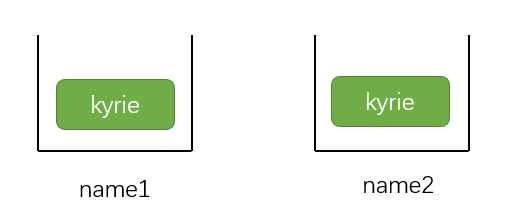

现代JavaScript
现代JavaScript
JS基础知识
数据类型
JavaScript中有8种基本的数据类型（7种原始类型和1种引用类型）
它们分别是：number bigInt string boolean null undefined object symbol
number
number代表整数和浮点数，范围 -(2^53 - 1) 到 (2^53 - 1)
还有三个比较特殊的数值
Infinity表示无穷大-Infinity表示负无穷大NaN代表一个计算错误，对NaN的任何进一步数学运算都是NaN
bigInt
表示超出Number类型精度之外的整数
通过在整数字段末尾添加n来表示
1 | const bInt = 1234567890123456789012345678901234567890n |
null
null独立构成一个类型，只包含null
JavaScript中的null表示一个”无”、”空”或”值未知”的特殊值
undefined
undefined也是自成一个类型
它表示 未被赋值
如果一个变量被声明，但是未赋值，那么它的值就是undefined
值的比较
不同类型间的比较
对于不同类型值的比较，JS会首先尝试将其转化为数字（number）再判定大小
1 | '2' > 1 //true |
对null和undefined进行比较
显然，在严格模式下===，因为它们属于不同的类型，所以不相等
1 | null === undefined // false |
在非严格模式下==，两者是相等的
1 | null == undefined //true |
另外，在使用数学式或者其他比较方法< > <= >=时
null会被转化为 0
undefined会被转化为 NaN
null的示例说明：null与0的比较
1 | null > 0 //false (1) |
对于(1)、(3)来说，在进行> >=比较时，null被转化成0，显然null>=0
对于(2)来说，null和undefined在进行相等性==比较时，不会进行类型转化。所以在非严格模式下，除了它们之间互等，不与其他相等
undefined的示例说明：undefined不应该与其他值进行比较
1 | undefined > 0 //false |
逻辑运算符
JS中的假值；undefined、null、0、NaN、””（空字符串，不是空格字符串）、false
除了上述的7种以外都是真值
||（或）
大部分情况下，逻辑或||用来测试是否有任何给定的条件为true
在JS中，逻辑或||的用法更加灵活，它会将不是布尔值的操作数转化为布尔值来参与运算
或运算寻找第一个真值
给定多个参与或运算的值
1 | result = value1 || value2 || value3 |
||做了如下的事情：
- 从左到右依次计算操作数
- 处理每一个操作数时，都将其转化为布尔值。如果结果是
true，就停止计算返回这个操作数的初始值 - 如果所有的操作数都被计算过（且结果都是false）。就返回最后一个操作数的初始值
简单地说：||操作符返回遇到的第一个真值，如果不存在真值，就返回最后一个值
&&（与）
在传统编程中，当多个操作数都是真值时，返回true。否则返回false
与或运算符一样，在JS中它也有一些灵活的用法
与运算寻找第一个假值
1 | result = value1 && value2 && value3 |
&&做了如下的事情：
- 从左到右依次计算操作数
- 处理每一个操作数时，都将其转化为布尔值。如果结果是
false，就停止计算返回这个操作数的初始值 - 如果所有的操作数都被计算过（且结果都是true）。就返回最后一个操作数的初始值
1 | console.log(1 && 0 && 5); //0 |
??（空值合并运算符）
当一个值既不是null也不是undefined时，我们将它称为 “已定义的”
在前面我们说过，||返回第一个真值，换句话说，||无法区分false、0、空字符串、和null/undefined。
但很显然，有些时候false、0等数据是有意义的
而??返回第一个已定义的值
例如下面的情况：实际上，高度为0是合理且可能出现的情况，使用??就可以返回正确的值
1 | let height = 0 |
注意： ??的优先级较低，在表达式中使用时考虑加上括号
Object基础
方括号语法
对于单个词的属性，可以使用点语法实现。对于多词属性，点操作就不能用了。
示例代码：
1 | person['kyrie irving'] = true |
除此之外，点语法不能操作变量
1 | let person = { |
在创建对象时，我们还可以在对象字面量中使用方括号来表示计算属性
计算属性的含义就是：属性名从[变量]中的变量中获取
1 | let key = "name" |
对象的引用和复制
对象与原始类型的根本区别之一是：对象通过引用来存储和复制
对于原始变量，当我们将一个变量赋值给另一个变量，就会变成两个独立的变量
1 | let name1 = 'kyrie' |

对于对象来说，对象的变量存储的不是对象本身，而是对象在内存中的地址，也就是说对象变量是对这个对象的引用
1 | let person = { |
所以，当一个对象变量被复制时，复制的时引用，而不是对象本身
1 | let player = person |
可以知道的是，对象还是只有一个，只是它的引用有两个
正是因为指向同一个对象，一个对象变量访问并修改了对象的值，这个对象的所有引用都会发生改变
1 | player.name = 'harden' |
由此可以引出对象的比较
情况1：
1 | let a = {} |
a和b看似是相同的，但其实它们分别指向的是两个在内存中地址不同的对象，所以是不同的
情况2：
1 | let a = {} |
在此处的a和b都指向内存中同一个对象，所以它们相同
克隆与合并
每拷贝一个对象变量就又会创建指向对象的引用，那么我们有时候只是单纯需要对象里面的内容，而不希望形成引用
在JS中并没有内建的方法来处理，我们可以自己实现
方法一：
1 | let person = { |
方法二：
使用Object.assign方法
这个方法接收的第一个参数是目标对象，
之后的参数是按需传递源对象
Object.assign会将源对象上的属性拷贝到目标对象上
1 | let person = { |
方法三：es6的扩展操作符
1 | let person = { |
深层克隆
前面的克隆都是基于对象的属性都是原始类型值，当对象的某些属性也是对象时，使用前面的克隆方法还是会将属性以引用的方式拷贝过来
我们可以在前面方法一的基础上使用递归来实现
1 | let person = { |
垃圾回收
可达性
JS中主要的内存管理概念是可达性，简单地说，就是以某种方式可访问或可用的值
一些固有的可达值（这些值不能被释放）
- 当前执行的函数，它的局部变量和参数
- 当前嵌套调用链上的其他函数、它们的局部变量和参数
- 全局变量
这些值都被称为根
如果一个值可以通过引用或引用链从根访问其他值，则该值是可达的
例如：
1 | let user = { |
下图表示了全局变量user引用了对象{name:'kyrie'}
如果我们将user进行重写，切断他与对象的引用
1 | user = null |
那么这个对象就变成不可达了，因为没有引用指向它，不能访问到他。所以它会被当作垃圾回收
再来看下面的例子
1 | let person = { |

当我们将person重写，切断他与对象的引用
1 | person = null |
下面两个对象之间虽然存在引用，但是从根无法访问到它们，所以它们会被当作垃圾回收
可选链 “?.”
可选链?.，是一种访问嵌套对象属性的安全的方式。即使中间属性不存在，也不会出现错误
举个例子，我们有一个person对象，这个对象里面有一个属性friend，frined是一个对象包含了一个name属性，这个friend属性可以存在也可以不存在
在这种情况下，当我们尝试获取person.friend.name，如果这个person恰好没有提供friend属性，那么我们得到的就是一个报错。
这是显而易见的，因为试图在undefined上访问属性是不合法的
1 | let person = { |
但很多时候，我们希望得到的是一个undefined，而不是一个错误导致代码运行中断
也有许多方法可以来判断属性是否存在，例如if语句、三元运算符等。
当时总显得不够优雅
这个时候就可以使用JS新增的特性，可选链?.
示例代码：
1 | let person = { |
在上面的代码中，我们在friend属性后面使用了?.，
可选链?.会在前面的值为null或undefined时，停止计算并返回undefined
上面的person中没有定义friend属性，所以最后返回的是undefined。
可选链?.不是一个运算符，而是一个特殊的语法结构。它还可以与函数和方括号一起使用
?.[]用于使用中括号语法访问对象属性
示例代码：
1 | let key = 'name' |
?.()用于调用一个可能不存在的函数
例如：有两个person，有些person有写代码的能力，而有些person没有。
所以我们用可选链配合函数一起使用，如果person有code函数就调用他，没有的话就运算终止，没有报错，也什么都不发生
1 | let person1 = { |
数据类型
数字类型
toString方法
数字的toString方法在没传入参数的情况下，会返回转化成字符串的数字
1 | let num = 123 |
除此之外，还可以给toString方法 传入参数，表示要转化成的进制数
1 | let num = 123 |
isNaN(value)方法isNaN方法会将参数转换成数字，然后测试它是否为NaN
而且我们只能用isNaN方法来比较一个数是不是严格等于NaN
因为NaN十分的特殊，它不等于任何值，包括它自身
1 | console.log(NaN === NaN); //false |
数组
数组是一种特殊的对象，本质上来说它仍然是一个对象，所以它也是通过引用来复制的
1 | let arr1 = ['kyrie'] |
内部
数组真正特殊的是他们的内部实现，JS引擎会尝试把这些数据存储在连续的内存区，还会有一些其他的优化，让数组运行得非常快
对于数组来说，除了常规的for循环，还可以使用for..of循环，for..of循环不会获取当前元素的索引，只返回当前元素值。大多数情况下够用
1 | let arr = ['kyrie', 'kd', 'harden'] |
find
当有一个对象数组，我们需要返回满足特定条件的对象。传统的思路就是循环数组，然后条件判断取出要的对象，这样稍微有点麻烦
数组的find方法在这种情况就十分好用
find方法接收一个函数作为参数，这个函数有三个参数：item（元素）、index（索引）、array（整个数组）
在这个函数参数内部进行判断，满足条件就返回这个元素，并停止搜索。如果没有搜索到，返回undefined
1 | let res = arr.find(function(item, index,array) { |
示例代码：我们想要在对象数组中得到id为1的那项
1 | let arr = [ |
filter
find方法返回的是第一个为true的元素，filter的使用方法和find大致相同，但它返回所有匹配的元素组成的数组
示例代码：我们需要在一个对象数组中找id <= 3的元素
1 | let arr = [ |
map
数组的map方法经常使用，它对数组的每个元素都调用函数，并返回结果数组
语法：
1 | let newArr = arr.map(function(item, index, array) { |
示例代码：我们将数组的每个元素都加上100
1 | let arr = [1,2,3] |
reduce
reduce方法有两个参数：接收一个函数作为参数，这个函数一个一个的应用所有数组袁术，并将结果”搬运”到下一个调用；第二个参数表示起始值（可选）
参数：
- accumulator 表示上一个函数调用的结果，第一次等于起始值（如果提供了起始值）
- item 当前的数组元素
- index 当前索引
- arr 数组本身
语法：
1 | let value = arr.reduce(function(accumulator, item, index, array) { |
应用函数时，上一次函数调用的结果将作为第一个参数传递给下一次函数调用
因此，第一个参数本质上就是一个累加器，用于存储先前执行的结果，最后reduce返回的也是他
示例代码：我们需要累加数组中的所有项，在之前我们需要用循环来迭代。现在我们可以使用reduce简洁的实现
1 | let arr = [1,2,3,4,5] |
Array.isArray
数组是特殊的对象，并不是单独的数据类型
所以typeof无法区分数组和对象
1 | console.log(typeof {}); //object |
我们可以使用Array.isArray(val)来判断val是不是一个数组
1 | console.log(Array.isArray([])); //true |
Iterable object（可迭代对象）
可迭代对象是数组的泛化，就是说任何对象都可以被定制为可在for..of循环中使用的对象
例如我们有一个对象，它代表了一个数字区间，看上去十分适合用for..of循环
1 | let obj = { |
为了让obj对象可以被迭代（也就是在for..of中可以运行），我们需要为对象添加一个Symbol.iterator方法
- 当
for..of循环启动时，会调用这个方法，这个方法必须返回一个迭代器（iterator）也就是一个有next方法的对象 - next()方法返回的结果的格式必须是
{done: Boolean, value: any}，当done = true时，表示循环结束，否则value表示下一个值
示例代码：我们给上面的obj加上Symbol.iterator
1 | let obj = { |
可迭代对象的核心功能：
- obj自身没有next方法
- 是通过
obj[Symbol.iterator]()创建了另一个对象，即迭代器对象，它的next会为迭代生成值
因此，迭代器对象和与其进行迭代的对象时分开的
类数组（array-like）
类数组是具有索引和length属性的对象
例如：
1 | let arrLike = { |
类数组本质上并不是一个数组，所以它没有一些定义在数组上的方法
Array.fromArray.from可以将一个可迭代对象或者类数组转化成一个真正数组
1 | let arrLike = { |
Array.from有可选的第二个参数mapFn可以是一个函数，会在对象中的元素被添加到数组前，对每个元素调用这个函数，此外thisArg允许我们为函数设置this
语法：
1 | Array.from(obj[, mapFn, thisArg]) |
示例代码：我们将之前创建的可迭代对象变成真正的数组
1 | let obj = { |